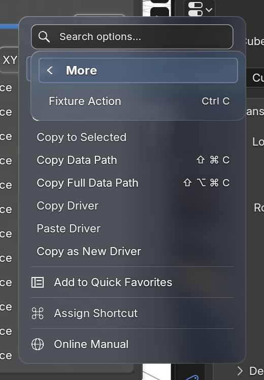

The captured submenu crosses from an extension panel into the adjacent native Properties editor. Blender’s simulated click on the overhanging part of “Fixture Action” reached the original panel field. Escape, outside dismissal, tooltips and shortcuts were checked in the same fixture.

Input replay passed on macOS Metal in Blender 4.2.23 and 5.2.2. A separate pixel test compared regular and bold glyphs during nested font flushes under Blender’s native text batch against immediate submission: 41.1% overlap in the old compressed frame; 100% at compression, expansion and rest in the corrected 5.1.2 and 5.2.2 runs. These are glyph masks, not a motion recording or a Windows qualification.